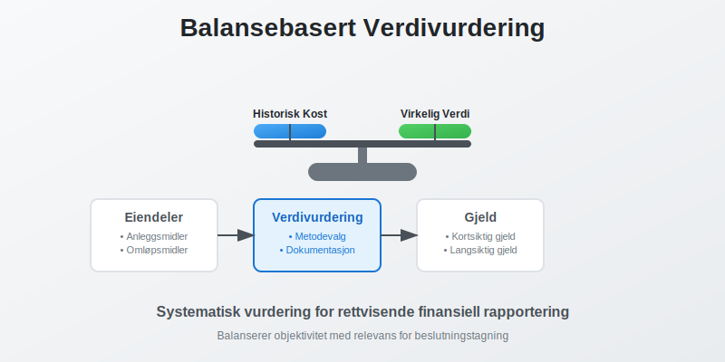
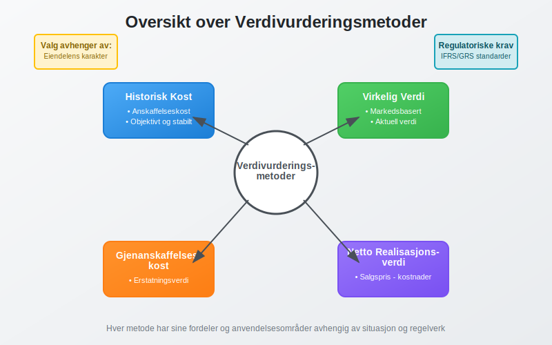
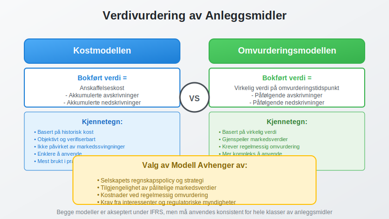
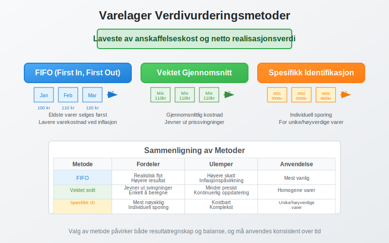
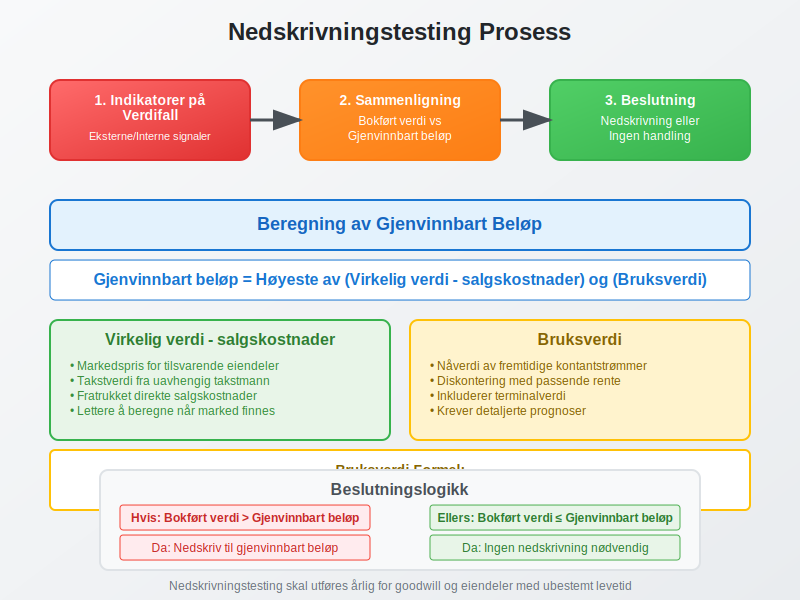

Balansebasert verdivurdering er prosessen med å fastsette verdien av eiendeler og gjeld i balansen. Dette er et grunnleggende prinsipp i regnskapsføring som påvirker hvordan selskaper presenterer sin finansielle stilling og verdiskapning. I motsetning til inntjeningsbasert verdivurdering som fokuserer på fremtidig inntjening, ser balansebasert verdivurdering på nåværende eiendeler og forpliktelser. For å forstå sammenhengen mellom markedsverdi og bokført verdi, se Q-ratio.

Hva er Balansebasert Verdivurdering?
Balansebasert verdivurdering omfatter systematisk vurdering av alle poster i balansen for å sikre at de gjenspeiler deres reelle økonomiske verdi. Dette innebærer valg mellom ulike verdivurderingsmetoder basert på:
- Eiendelens karakter og bruksområde
- Markedsforhold og tilgjengelighet av prisdata
- Regnskapsstandarder og lovkrav
- Selskapets forretningsmodell og strategi
Formål med Balansebasert Verdivurdering
Hovedformålene med balansebasert verdivurdering er å:
- Gi rettvisende bilde av selskapets finansielle stilling
- Støtte beslutningstagning for ledelse og investorer
- Sikre sammenlignbarhet mellom selskaper og perioder
- Oppfylle regulatoriske krav og regnskapsstandarder
- Identifisere verdiskapning og verdiforringelse
Verdivurderingsmetoder
Det finnes flere metoder for balansebasert verdivurdering, hver med sine fordeler og anvendelsesområder.

Historisk Kost
Historisk kost er den opprinnelige anskaffelseskosten for en eiendel, justert for avskrivninger og nedskrivninger.
Fordeler med Historisk Kost:
- Objektivitet: Basert på faktiske transaksjoner
- Verifiserbarhet: Lett å dokumentere og kontrollere
- Stabilitet: Ikke påvirket av markedssvingninger
- Enkelt: Krever minimal vurdering og skjønn
Ulemper med Historisk Kost:
- Utdatert informasjon: Gjenspeiler ikke nåværende markedsverdier
- Inflasjonspåvirkning: Ikke justert for prisstigning
- Begrenset relevans: Kan gi misvisende bilde av verdier
Virkelig Verdi (Fair Value)
Virkelig verdi er prisen som ville blitt mottatt ved salg av en eiendel eller betalt for å overføre en forpliktelse i en ordnet transaksjon mellom markedsdeltakere.
Hierarki for Virkelig Verdi:
| Nivå | Beskrivelse | Eksempler |
|---|---|---|
| Nivå 1 | Noterte priser i aktive markeder | Børsnoterte aksjer, obligasjoner |
| Nivå 2 | Observable input, ikke noterte priser | Rentekurver, valutakurser |
| Nivå 3 | Ikke-observable input | Interne verdsettelsesmodeller |
Gjenanskaffelseskost
Gjenanskaffelseskost er kostnaden for å anskaffe en tilsvarende eiendel med samme funksjonalitet og kapasitet.
Anvendelse av Gjenanskaffelseskost:
- Forsikringsformål: Fastsette erstatningsverdi
- Spesialiserte eiendeler: Når markedspriser ikke finnes
- Tekniske anlegg: Industrielle installasjoner
- Immaterielle eiendeler: Programvare og systemer
Netto Realisasjonsverdi
Netto realisasjonsverdi er estimert salgspris fratrukket estimerte kostnader for ferdigstillelse og salg.
Typisk Anvendelse:
- Varelager: Spesielt for sesongvarer og utdaterte produkter
- Kundefordringer: Justert for forventede tap
- Anleggsmidler: Ved planlagt salg eller nedleggelse
Praktisk Anvendelse av Verdivurdering
Verdivurdering av Anleggsmidler
Anleggsmidler kan verdivurderes etter to hovedmodeller:

Kostmodellen:
Bokført verdi = Anskaffelseskost - Akkumulerte avskrivninger - Akkumulerte nedskrivninger
Omvurderingsmodellen:
Bokført verdi = Virkelig verdi på omvurderingstidspunktet - Påfølgende avskrivninger - Påfølgende nedskrivninger
Verdivurdering av Finansielle Instrumenter
Finansielle instrumenter klassifiseres i kategorier som bestemmer verdivurderingsmetode:
| Kategori | Verdivurdering | Verdiendringer |
|---|---|---|
| Amortisert kost | Historisk kost + renter - avdrag | Resultatføres ved realisasjon |
| Virkelig verdi over OCI | Virkelig verdi | Føres over utvidet resultat |
| Virkelig verdi over resultat | Virkelig verdi | Resultatføres løpende |
Verdivurdering av Varelager
Varelager verdivurderes til laveste av anskaffelseskost og netto realisasjonsverdi.
Kostnadsmetoder for Varelager:
- FIFO (First In, First Out): Eldste varer selges først
- Vektet gjennomsnitt: Gjennomsnittlig kostnad for alle varer
- Spesifikk identifikasjon: For unike eller høyverdige varer

Omvurdering av Eiendeler
Omvurdering innebærer å justere bokført verdi til virkelig verdi på balansedagen.
Regnskapsføring av Omvurdering
Oppskrivning:
Dr. Eiendel (økning i verdi)
Cr. Omvurderingsreserve (egenkapital)
Nedskrivning:
Dr. Nedskrivning (kostnad)
Cr. Eiendel (reduksjon i verdi)
Omvurderingsreserve
Omvurderingsreserven er en del av egenkapitalen som inneholder:
- Urealiserte gevinster fra oppskrivning av eiendeler
- Reversering av tidligere nedskrivninger
- Valutaomregningsdifferanser på utenlandske datterselskaper
Nedskrivningstesting
Nedskrivningstesting er prosessen med å vurdere om en eiendels bokførte verdi overstiger dens gjenvinnbare beløp.
Indikatorer på Verdifall
Eksterne indikatorer:
- Markedsverdifall på mer enn forventet
- Negative endringer i teknologi eller marked
- Økte renter som påvirker diskonteringsrente
- Selskapets markedsverdi under bokført verdi
Interne indikatorer:
- Fysisk skade eller forringelse
- Endringer i bruk eller strategi
- Dårligere ytelse enn forventet
- Planer om avhending eller omstrukturering
Beregning av Gjenvinnbart Beløp

Gjenvinnbart beløp er det høyeste av:
- Virkelig verdi fratrukket salgskostnader
- Bruksverdi (nåverdi av fremtidige kontantstrømmer)
Beregning av Bruksverdi:
Bruksverdi = Σ (Kontantstrøm år t / (1 + diskonteringsrente)^t) + Terminalverdi
Denne tilnærmingen ligner på metodene brukt i inntjeningsbasert verdivurdering, men anvendes her for å teste om eiendelens bokførte verdi er for høy.
Verdivurdering i Ulike Bransjer
Eiendomsbransjen
I eiendomsbransjen er virkelig verdi ofte foretrukket for:
- Investeringseiendommer: Verdivurderes til virkelig verdi
- Utleieeiendommer: Basert på markedspriser og avkastningskrav
- Utviklingsprosjekter: Netto nåverdi av fremtidige kontantstrømmer
Teknologibransjen
Teknologiselskaper har spesielle utfordringer:
- Immaterielle eiendeler: Vanskelig å verdsette
- Rask teknologiutvikling: Høy risiko for verdifall
- Forsknings- og utviklingskostnader: Usikker fremtidig verdi
Finansbransjen
Finansinstitusjoner har omfattende krav til verdivurdering:
- Utlånsportefølje: Justert for kredittrisiko
- Verdipapirer: Markedsbasert verdivurdering
- Derivater: Komplekse verdsettelsesmodeller
Regulatoriske Krav
IFRS-krav
Under IFRS er det spesifikke krav til verdivurdering:
- IAS 16: Eiendom, anlegg og utstyr
- IAS 38: Immaterielle eiendeler
- IAS 39/IFRS 9: Finansielle instrumenter
- IAS 40: Investeringseiendommer
- IFRS 13: Måling av virkelig verdi
Norske Regnskapsstandarder
God regnskapsskikk i Norge krever:
- Forsiktighetsprinsippet: Ikke overvurdere eiendeler
- Sammenstillingsprinsippet: Matche kostnader og inntekter
- Konsistensprinsippet: Ensartet anvendelse over tid
Utfordringer og Risiko
Skjønnsmessige Vurderinger
Balansebasert verdivurdering innebærer betydelig skjønn som kan påvirke:
- Resultatmanipulasjon: Bevisst over- eller undervurdering
- Volatilitet: Svingninger i rapporterte verdier
- Sammenlignbarhet: Forskjeller mellom selskaper
Markedsrisiko
Markedsvolatilitet påvirker verdivurdering gjennom:
- Prissvingninger: Endringer i markedsverdier
- Likviditetsrisiko: Vanskeligheter med å realisere verdier
- Kredittrisiko: Endringer i motpartens kredittverdighet
Beste Praksis
Dokumentasjon
God dokumentasjon av verdivurdering inkluderer:
- Verdsettelsesmetoder: Begrunnelse for valg av metode
- Forutsetninger: Underliggende antagelser og estimater
- Sensitivitetsanalyse: Påvirkning av endrede forutsetninger
- Kvalitetssikring: Uavhengig gjennomgang av vurderinger
Intern Kontroll
Effektiv intern kontroll omfatter:
- Klare retningslinjer: For verdivurderingsprosesser
- Kompetansekrav: Kvalifisert personell
- Uavhengig validering: Ekstern bekreftelse av verdier
- Regelmessig oppdatering: Kontinuerlig overvåking
Rapportering og Transparens
God rapportering inkluderer:
- Noteopplysninger: Detaljert informasjon om metoder
- Sensitivitetsanalyse: Påvirkning av endrede forutsetninger
- Usikkerhetsmoment: Identifikasjon av risikoområder
- Sammenlignbare tall: Konsistent presentasjon over tid
Fremtidige Utviklingstrekk
Digitalisering
Teknologiske fremskritt påvirker verdivurdering:
- Automatisering: Redusert manuelt arbeid
- Big Data: Bedre datagrunnlag for vurderinger
- Kunstig intelligens: Avanserte verdsettelsesmodeller
- Blockchain: Økt transparens og sporbarhet
Bærekraftrapportering
ESG-faktorer får økende betydning:
- Miljørisiko: Påvirkning på eiendelsverdier
- Sosiale faktorer: Omdømmerisiko og verdiskapning
- Styring: Corporate governance og risikostyring
Regulatoriske Endringer
Forventede endringer inkluderer:
- Strengere krav: Økt fokus på kvalitet og transparens
- Harmonisering: Mer ensartede standarder globalt
- Teknologitilpasning: Nye regler for digitale eiendeler
Konklusjon
Balansebasert verdivurdering er et komplekst og kritisk område i regnskapsføring som krever:
- Grundig forståelse av ulike verdivurderingsmetoder
- Solid faglig skjønn i valg og anvendelse av metoder
- Kontinuerlig oppdatering av kunnskap og praksis
- Effektiv intern kontroll og kvalitetssikring
Ved å følge beste praksis og holde seg oppdatert på regulatoriske endringer, kan selskaper sikre at deres balansebaserte verdivurdering gir et rettvisende bilde av den finansielle stillingen og støtter god beslutningstagning.
For mer informasjon om relaterte emner, se våre artikler om inntjeningsbasert verdivurdering, anleggsmidler, avskrivning og anskaffelseskost.